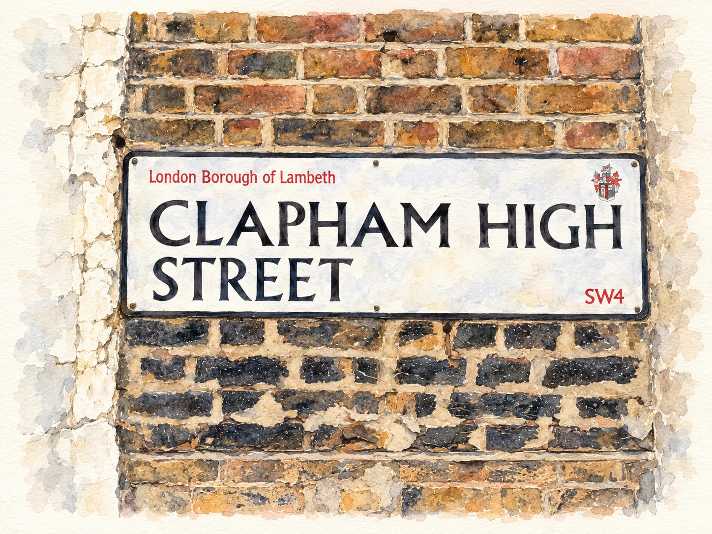
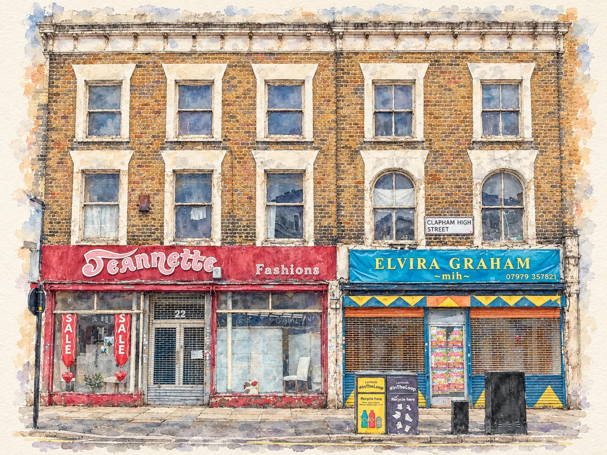
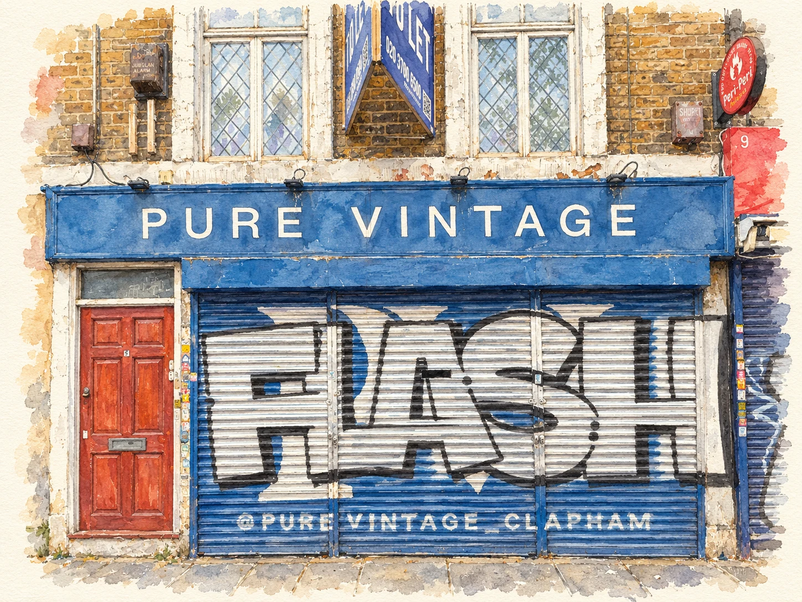
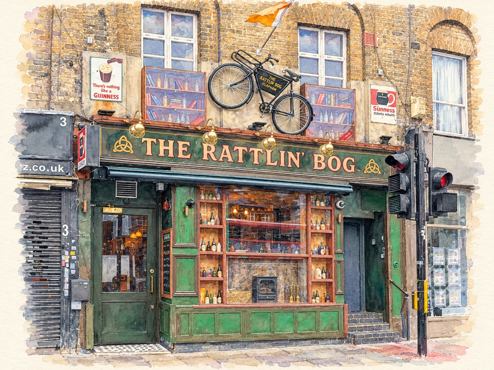
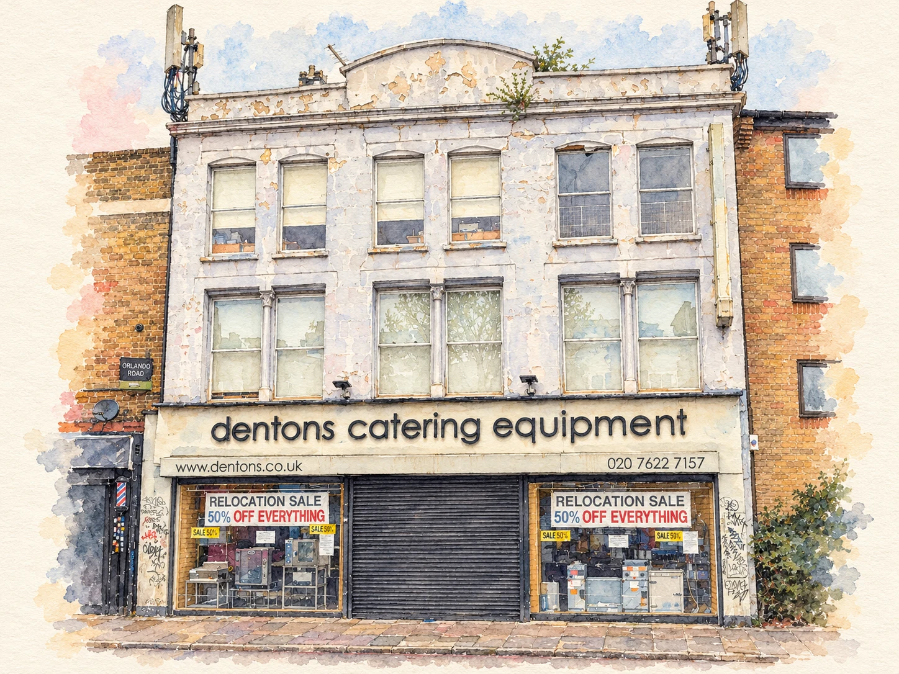
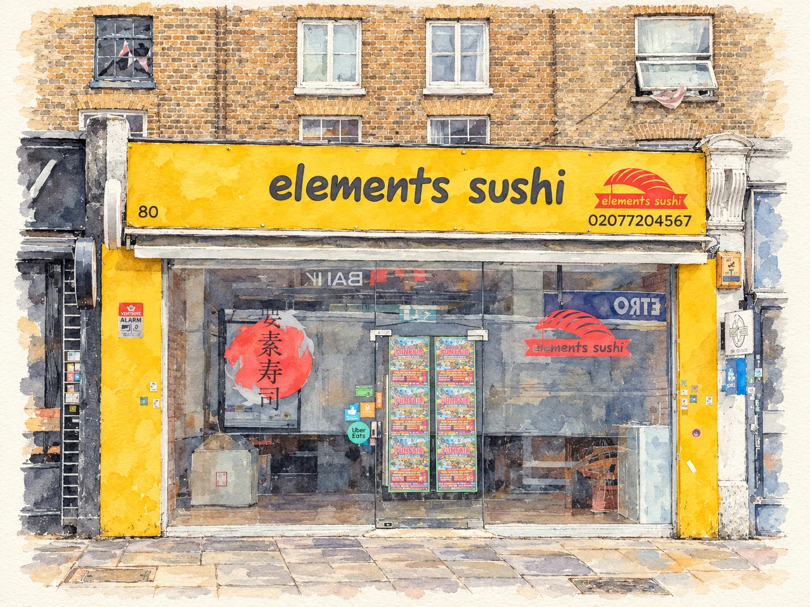
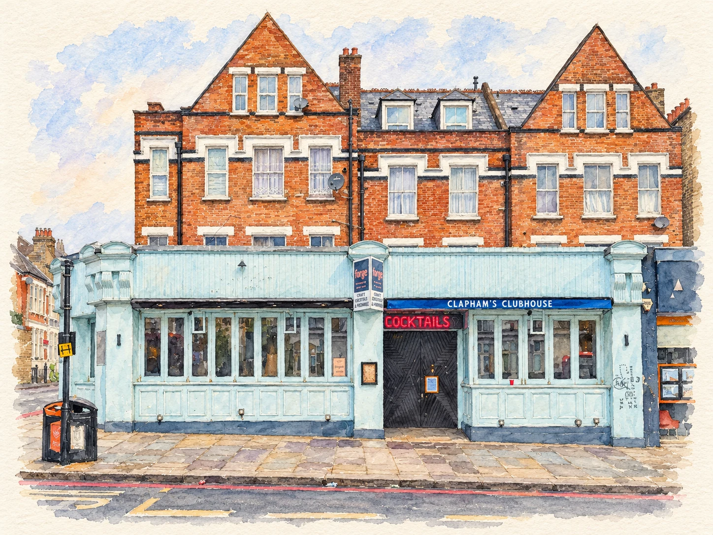
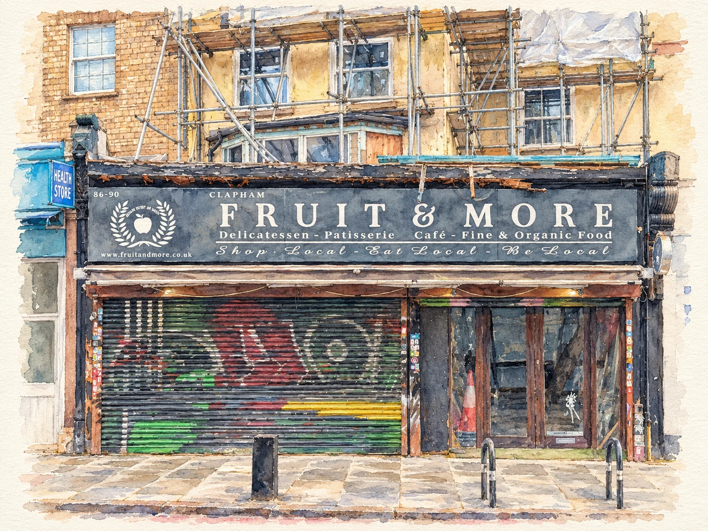

Clapham, London A local history project
Every shopfront
has a story.
Documenting the changing face of our high street.
The shops, the signs, and what used to be there.








Behind the shop windows
An everyday street.
An extraordinary
amount of history.
Worth keeping a record of.
A familiar sign comes down. A new name goes up. Before long, we’re asking: “What used to be there?”
Clapham Shopfronts is an ongoing project to photograph and document the businesses on the streets of Clapham and how they change over time.
Shops open, close, merge, split, and change use. We’re building a photographic and historical record of those changes — a small archive of a London high street in transition.
The collection is growing. This is just the beginning.
What we’re keeping an eye on
Coming & going
New openings, closing doors, and the vacant units in between.
A fresh coat of paint
Refurbishments, new signs, and familiar places finding a new use.
Then & now
Before and after photographs, tracing the story of each shop unit.
Local memories wanted
Remember what
used to be here?
An old photograph. A shop you grew up visiting. A name you haven’t thought about in years. If you have a piece of Clapham’s shopfront history, we’d love to hear from you.
hello@claphamshopfronts.com